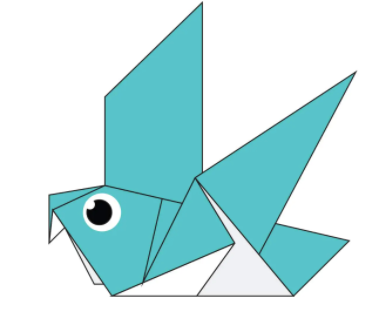
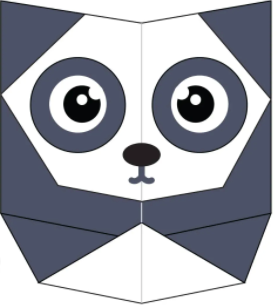
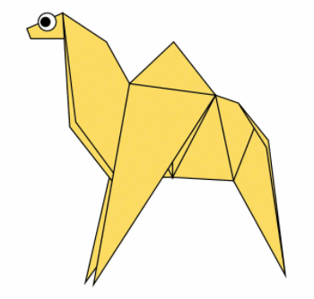
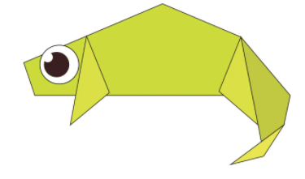
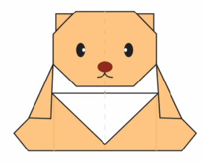
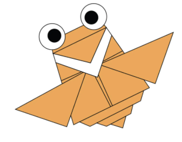
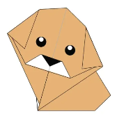
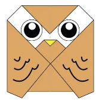

Origami Pigeons

Click the image above to learn how to create a Origami Pigeon.
Interesting facts about Pigeons
- Pigeons are incredibly complex and intelligent birds
- They have outstanding navigational abilities
- Pigeons also have excellent hearing
- Pigeons are really social animals
- They are really strong and swift fliers because of their long wings and powerful muscles
- Pigeons have really good eyesight due to the fact that their eyes are on the side of their head
Origami Pandas

Click the image above to learn how to create a Origami Panda.
Interesting facts about Pandas
- Pandas have great camouflage
- They spend a lot of their day eating
- Bamboo makes up a huge part of a Panda's diet
- Panda cubs are pink, but then grow up to be black and white
- A grown panda can eat 12-38 kilos of bamboo per day
- Pandas are loved because of their cuteness
- Pandas are "lazy" as eating and sleeping make up their whole day
Origami Camels

Click the image above to learn how to create a Origami Camel.
Interesting facts about Camels
- A camel's hump doesn't store water, but rather fat
- Camels can go for about 7 months without water
- They drink about 20 gallons of water a time
- Camels are not born with humps
- The average camel lives about 40 years
- Camels sleep standing up keeping them safe from predators
- They have three sets of eyelids and two rows of eyelashes to help keep sand out
Origami Chameleons

Click the image above to learn how to create a Origami Chameleon.
Interesting facts about Chameleons
- There are around 160 types of species of chameleons
- Almost half of the known species of chameleons live in Madagascar
- Chameleons have a wide range of sizes
- Chameleons change color in order to communicate or regulate body temperature
- Unlike other lizards, a chameleon cannot regrow its tail
- The chameleons' eyes can rotate and focus separately on 180-degree arcs
Origami Teddy Bears

Click the image above to learn how to create a Origami Teddy Bear.
Interesting facts about Teddy Bears
- Teddy bears got their name from the story that Teddy Roosevelt refused to shoot a bear cub while on a hunting trip in 1902
- The first toy stuffed bear was created by German toymaker Margarete Steiff
- On any given day as many as 20,000 teddy bears are up for auction on eBay
- Up to 2,000 U.S. specialty teddy bear stores sell millions every year
- The world's smallest teddy bear is a mere 0.29 inches tall
Origami Flying Cicadas

Click the image above to learn how to create a Origami Flying Cicada.
Interesting facts about Flying Cicadas
- Flying Cicadas can survive a huge fall as babies, or nymphs
- The loud whirring or buzzing sound you hear is an all-male cicada chorus
- Most of them have red-orange eyes
- Cicadas have a total of 5 eyes: two obvious compound eyes and three ocelli, which are believed to detect light and darkness
- Female Cicadas lay 200 to 400 eggs in tiny holes that they make in the branches of trees and shrubs
Origami Puppies

Click the image above to learn how to create a Origami Puppy.
Interesting facts about Puppies
- Puppies are born blind and deaf
- They can't hear until they're about three weeks old
- They spend 15–20 hours a day sleeping
- Puppies are born without teeth
- Puppies reach their full size between 12 to 24 month
- Between 4 to 6 months of age, most puppies shed and grow their adult coat
- Their sense of smell is at least 40x better than ours
Origami Owl

Click the image above to learn how to create a Origami Owl.
Interesting facts about Owls
- There are around 200 different owl species
- Owls are active at night
- Most owls hunt insects, small mammals and other birds
- Some owl species hunt fish
- A group of owls is called a parliament
- Owls can rotate their necks 270 degrees
- Owls can fly up to 40 miles per hour when necessary
- Owls have powerful talons (claws) which help them catch and kill prey